شانزده صفحه در سه بخش: تحلیل · فروش · عملیات.
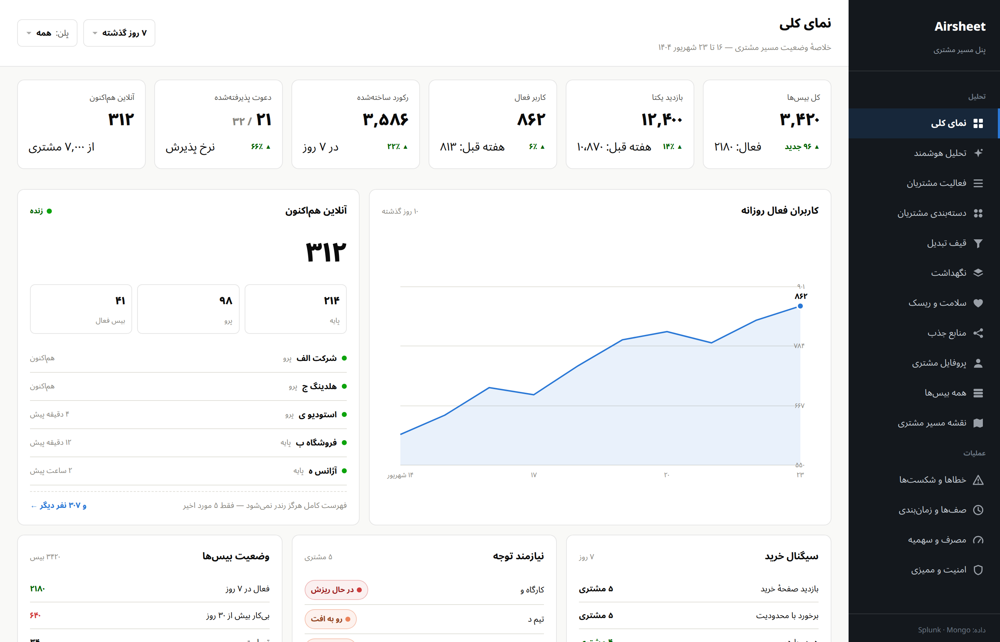
کل بیسها، بازدید، آنلاینها، سیگنال خرید و وضعیت بیسها.
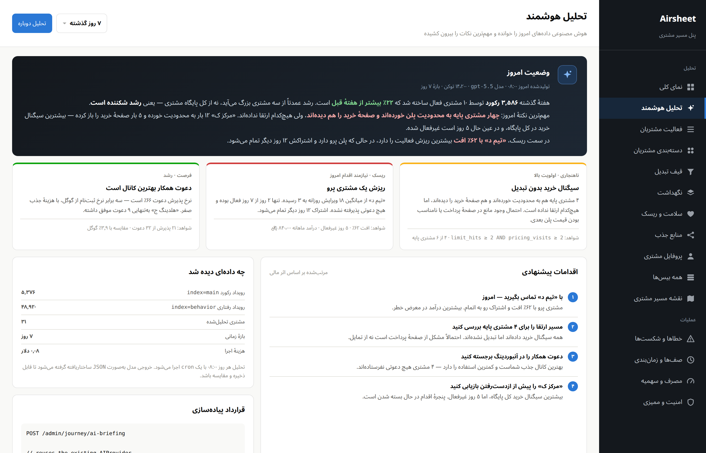
هوش مصنوعی دادهها را خوانده: وضعیت امروز، ناهنجاری و اقدام.
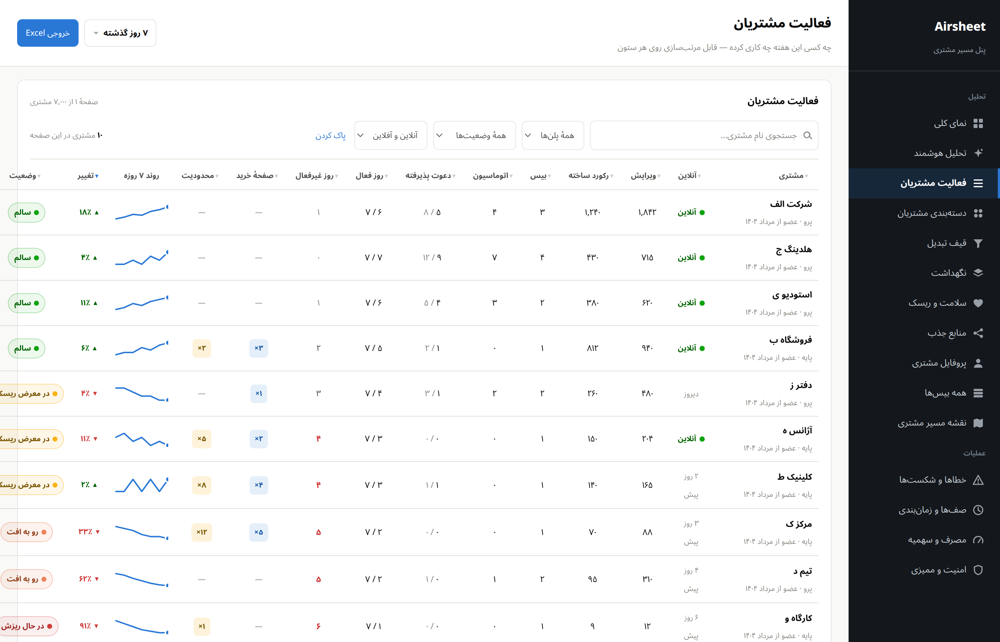
جستجو، فیلتر و مرتبسازی زنده روی ۱۴ ستون.
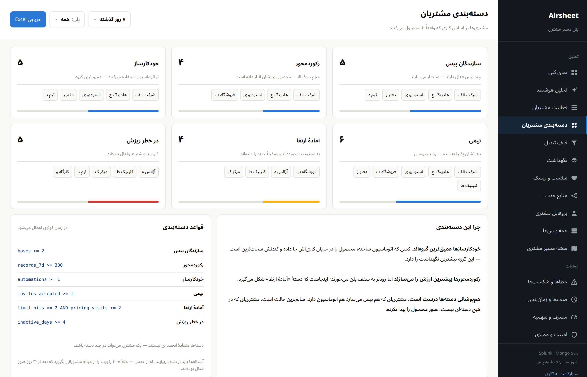
سازندگان بیس، رکوردمحورها، خودکارسازها، آمادهٔ ارتقا، در خطر.
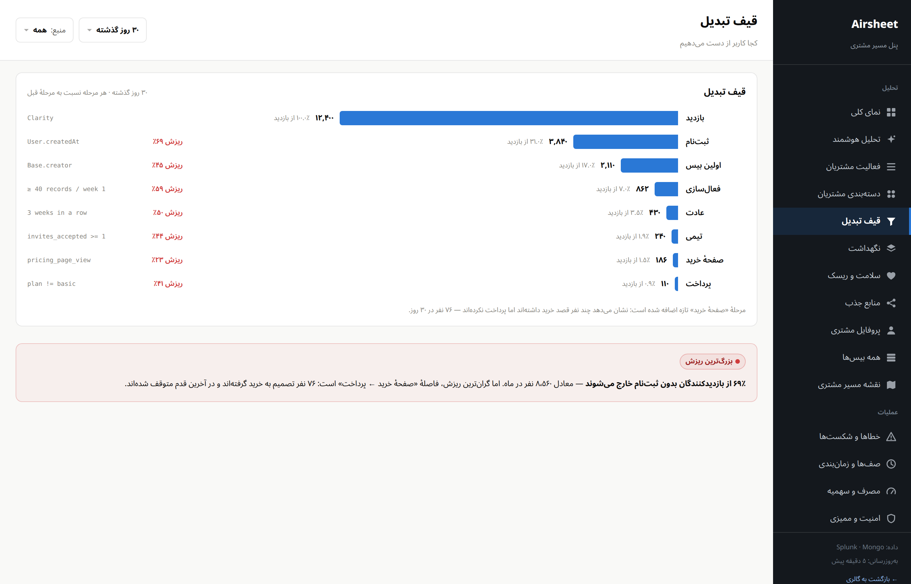
هشت مرحله از بازدید تا پرداخت با نرخ ریزش هر پله.
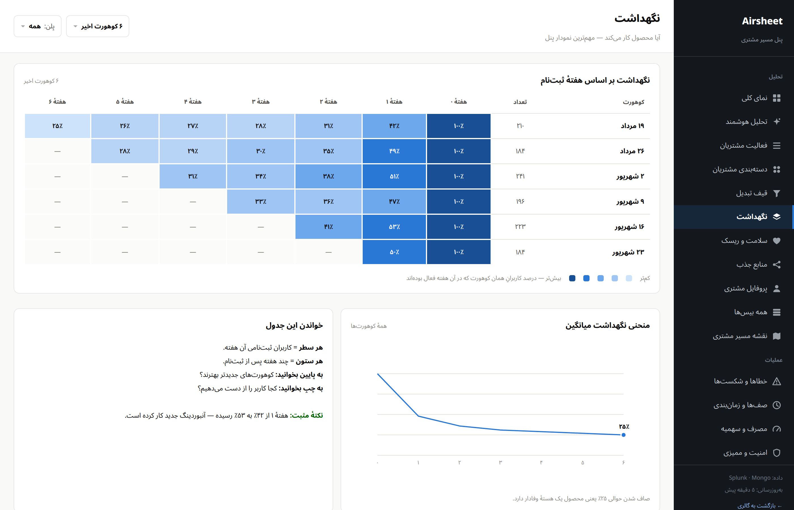
آیا کاربر برمیگردد؟ مهمترین نمودار پنل.
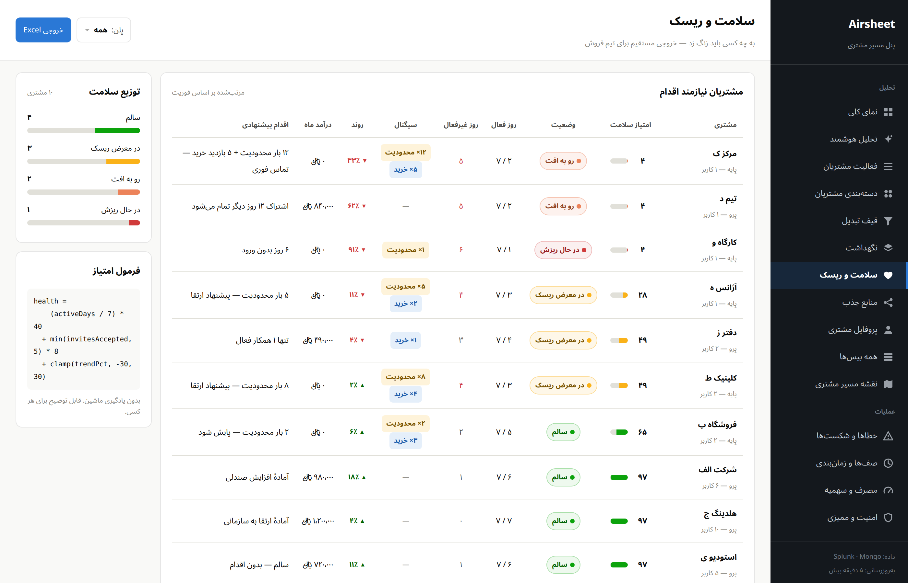
به چه کسی امروز باید زنگ زد — فهرست آمادهٔ فروش.
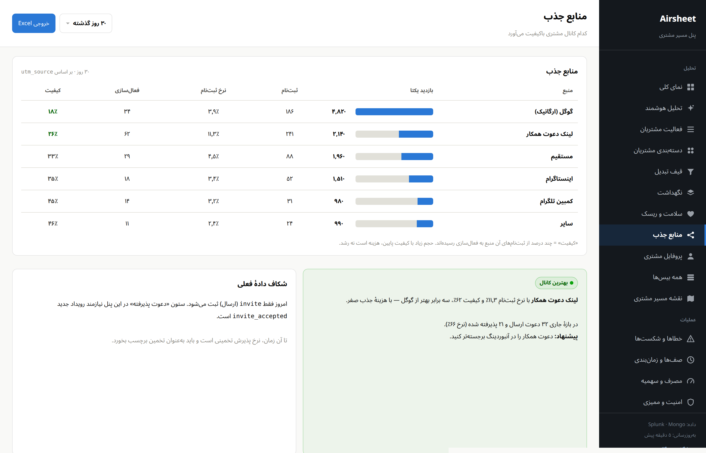
کدام کانال مشتری باکیفیت میآورد.
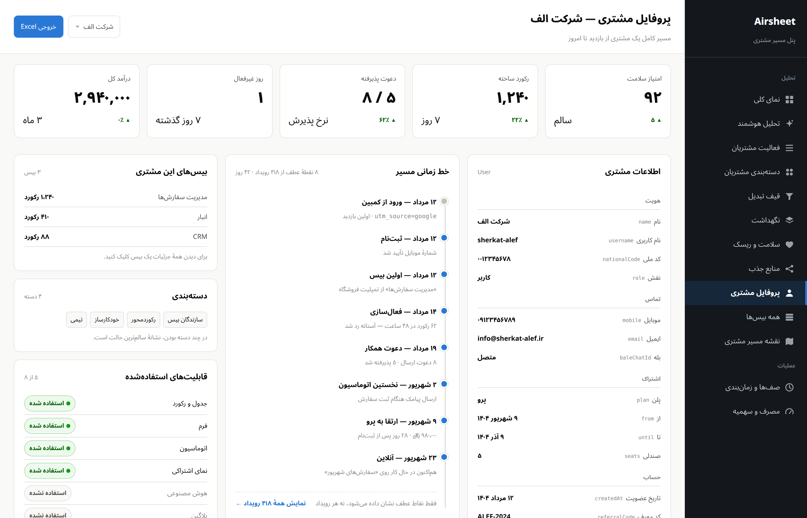
اطلاعات تماس و هویت، خط زمانی، بیسها و دستهها.
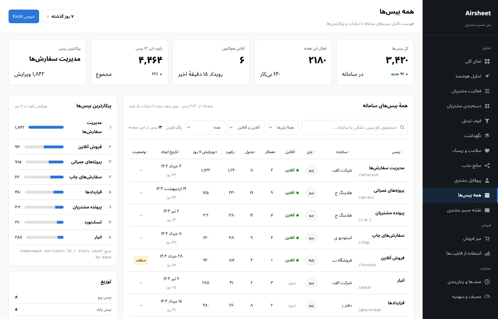
جستجو و فیلتر روی همهٔ بیسها + پرکارترینها.
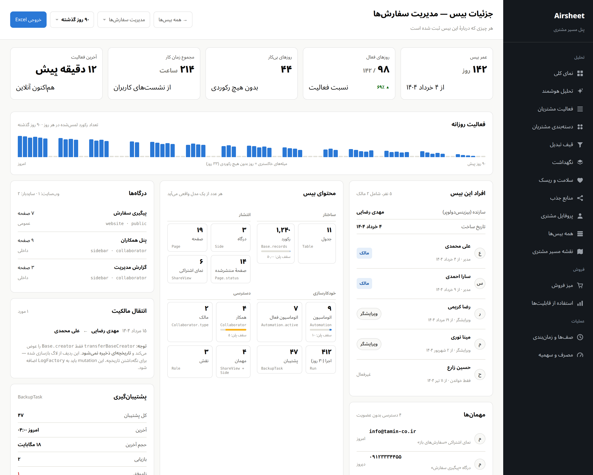
مدت فعال بودن و شمارش ۱۶ موجودیت بیس.
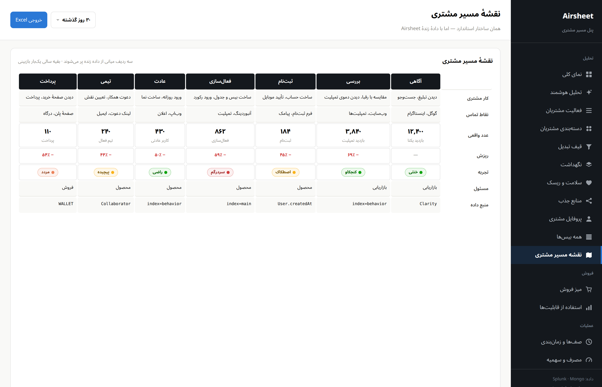
قالب استاندارد CJM با سه ردیف دادهٔ زنده.
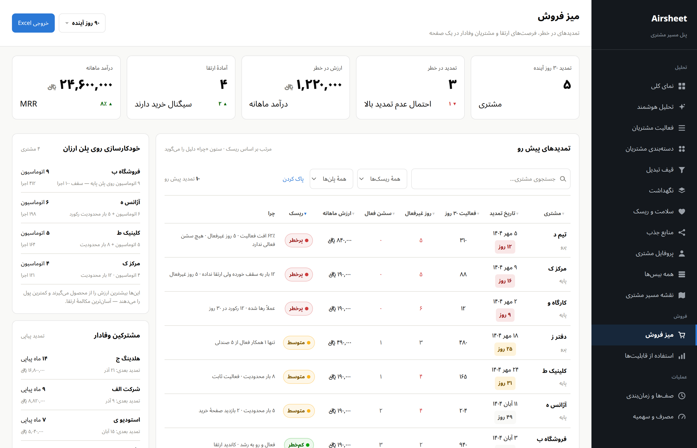
تمدیدهای در خطر با دلیل، خودکارسازی روی پلن ارزان، مشترکین وفادار.
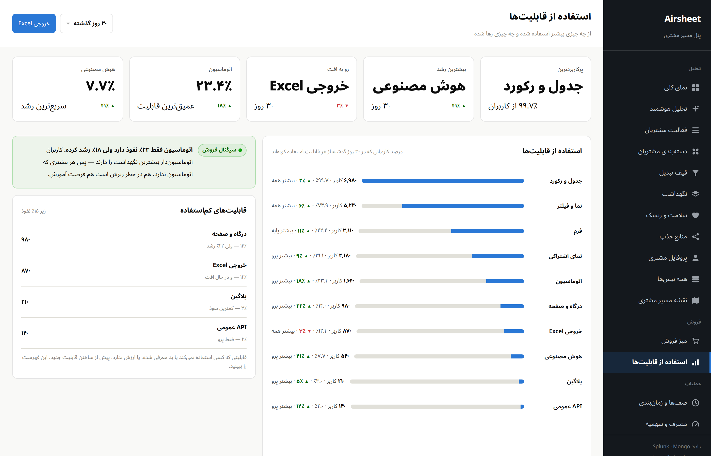
از چه چیزی بیشتر استفاده شده و چه قابلیتی رها شده.
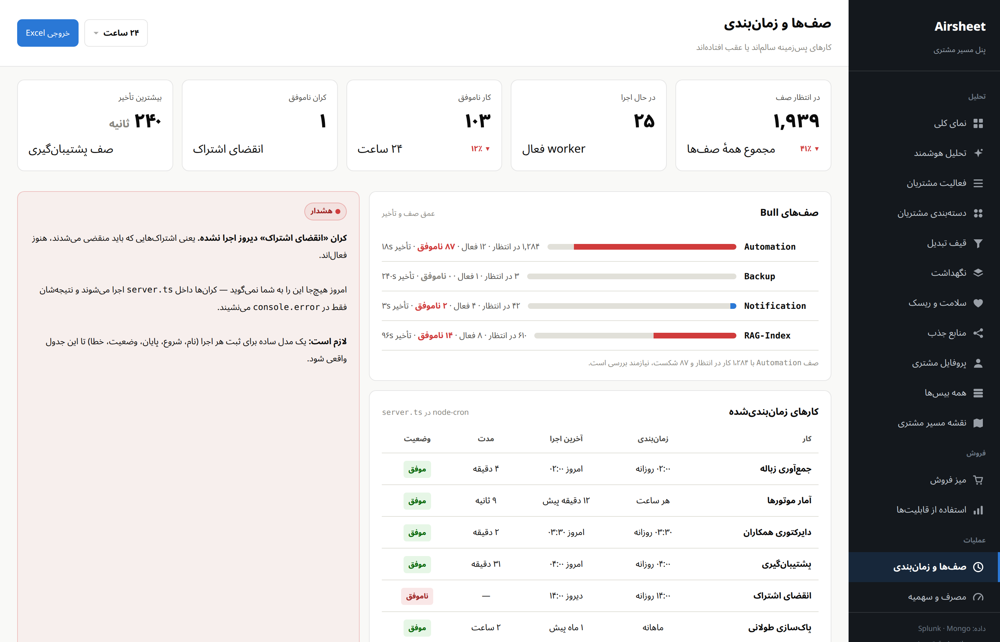
عمق صف Bull، کرانهای ناموفق و تأخیر کارهای پسزمینه.
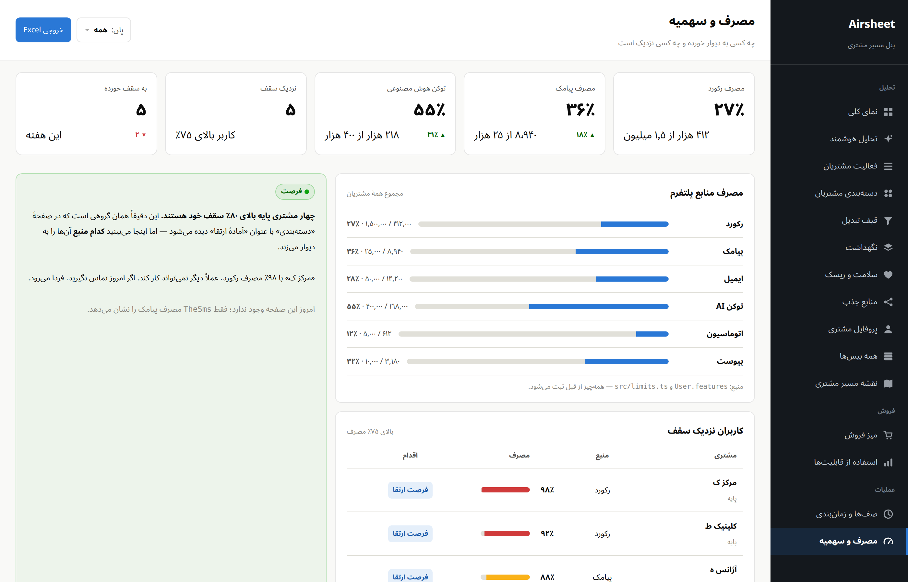
چه کسی به سقف پلن خورده و چه کسی نزدیک است.